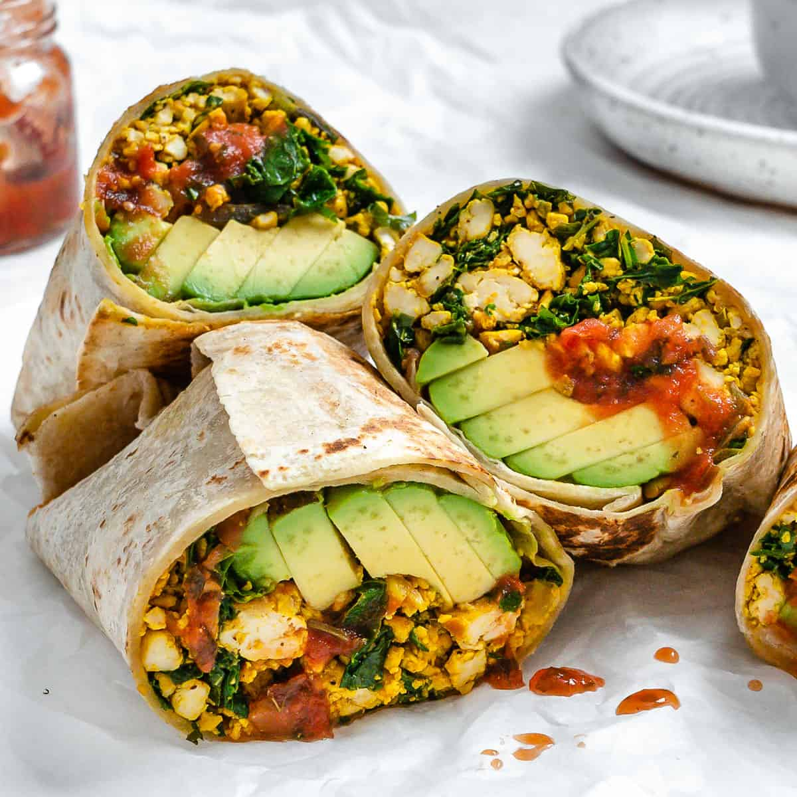

Breakfast Burrito

Description
A breakfast burrito is a savory and filling meal,
perfect for starting the day with energy.
Wrapped in a warm flour tortilla,
it usually contains scrambled eggs,
crispy bacon or sausage, melted cheese, and potatoes,
all seasoned with spices to enhance the flavor.
Optional ingredients like avocado, salsa, or
sour cream can add creaminess and a touch of freshness.
The combination of soft eggs, crunchy meat,
and gooey cheese makes for a satisfying bite every time.
Ingredients
- Flour tortilla
- Scrambled eggs
- Bacon or sausage
- Shredded cheese
- Cooked potatoes
- Salt and pepper (any seasoning)
- Optional: avocado, salsa, sour cream, hot sauce
Steps
- Cook the bacon or sausage until crispy, then set aside.
- In the same pan, cook the potatoes until golden brown and crispy.
- Scramble the eggs, seasoning with salt and pepper, and cook until done.
- Warm the flour tortilla by lightly toasting it in a pan or microwaving it for 15 seconds.
- Assemble the burrito by layering the scrambled eggs, cooked bacon or sausage, cheese, and potatoes in the center of the tortilla.
- Add optional ingredients like avocado, salsa, or sour cream if desired.
- Roll the burrito by folding the sides in first, then rolling from one end to the other.
- Toast the burrito in a pan for a few minutes to give the outside a crisp texture (optional).
- Serve hot!
Back to home